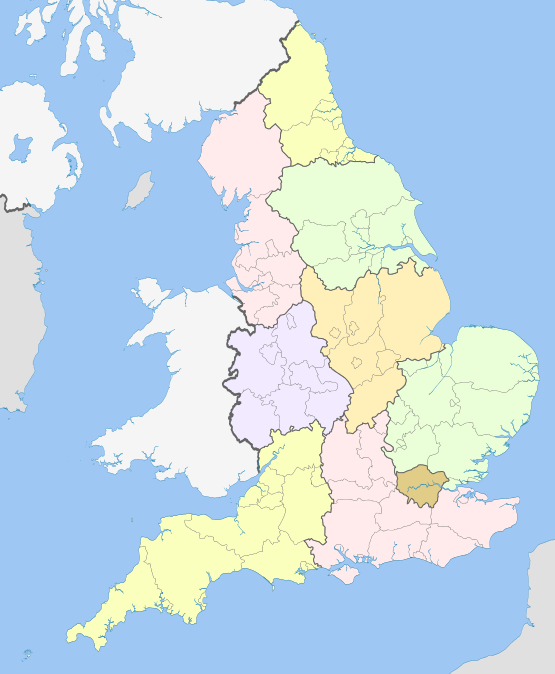
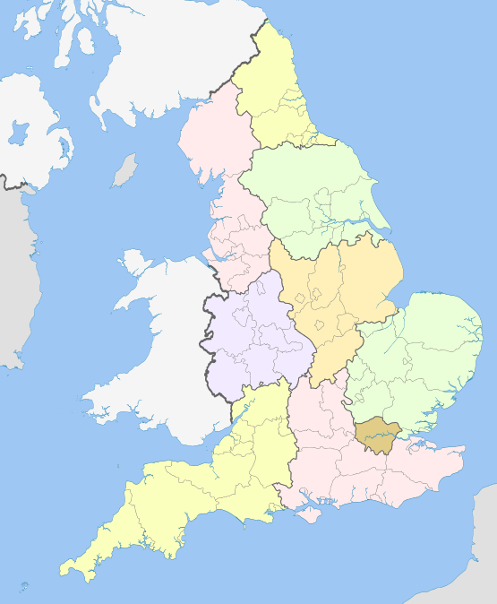

Англія |

Карта Англії:
Головна
1. Королева Англії.
2. Букінгемський палац.
3. Біг Бен.
4.Тауер
Англія |
|
|||
| Назва країни походити від назви племені англів, одного з германської племен, что оселились тут у V и VI століттях. | |
Карта Англії:  |
|
|
Меню Головна 1. Королева Англії. 2. Букінгемський палац. 3. Біг Бен. 4.Тауер |
|||
| Англія - країна в Західній Европе, что входити до сполучення королівства Великої Британії та Північної Ірландії. Найбільша за площею и населення з чотірьох стран сполучення королівства та трьох частин Великої Британії. | |||
|
|||